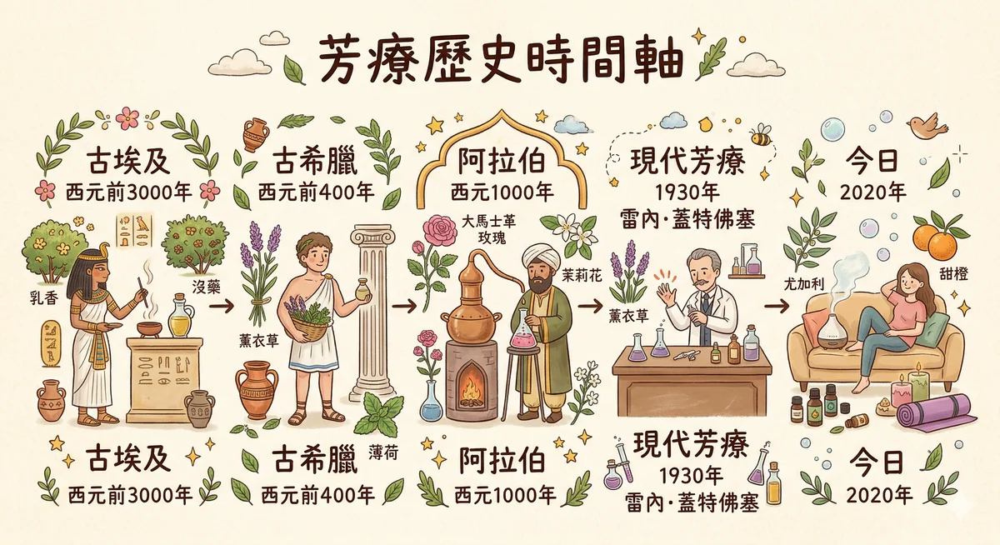
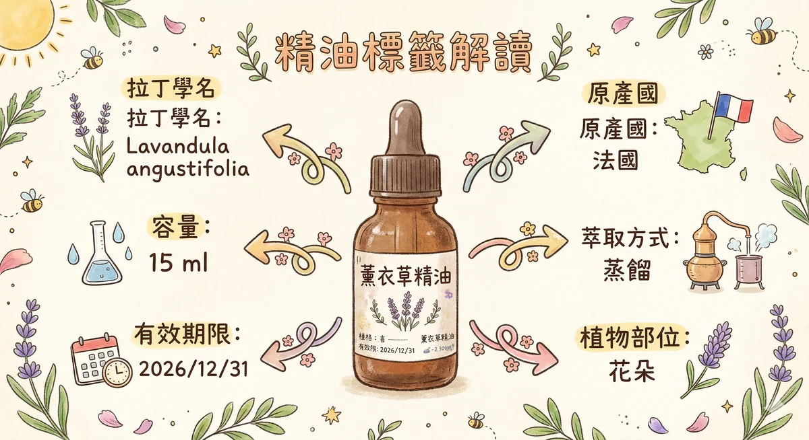
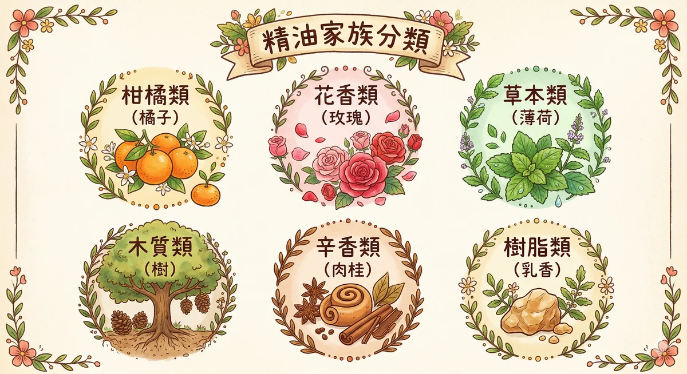
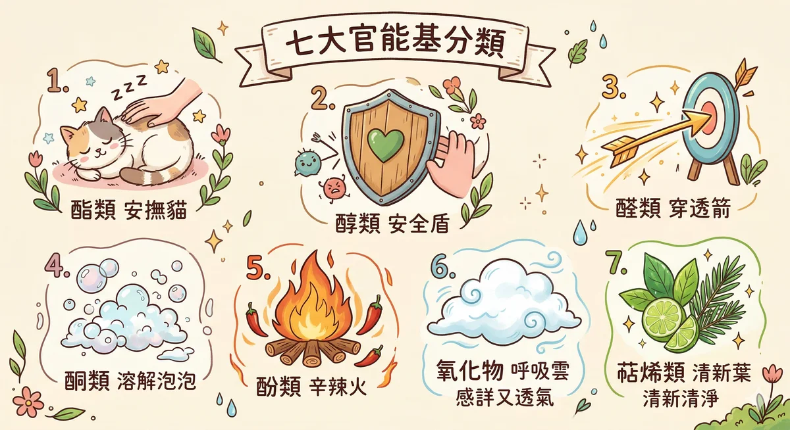
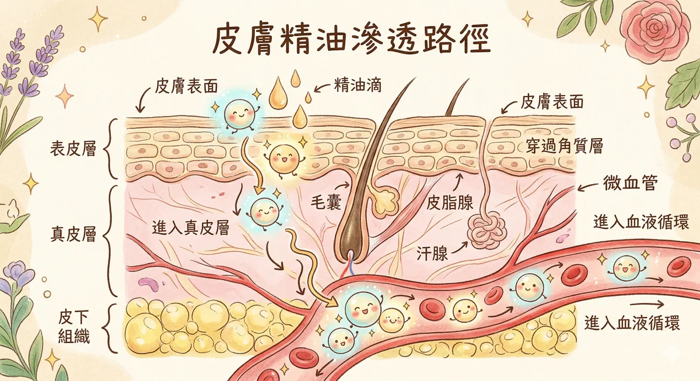
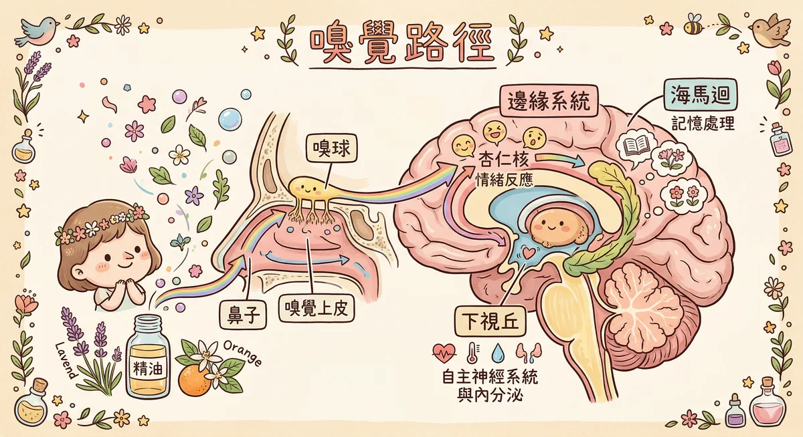
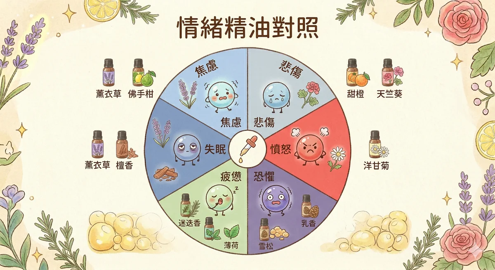
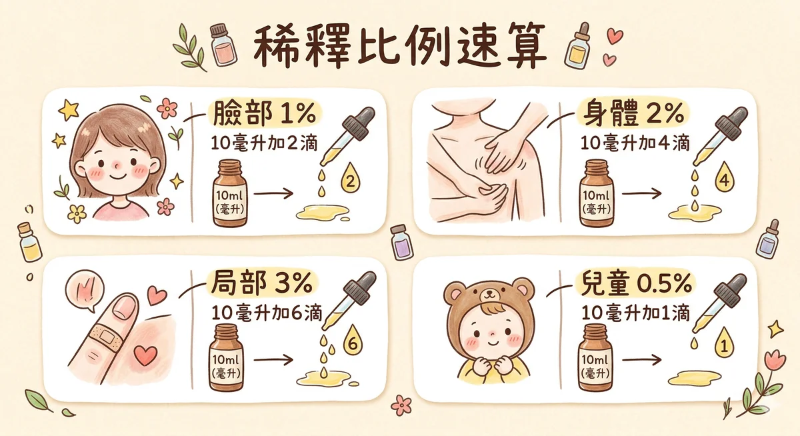
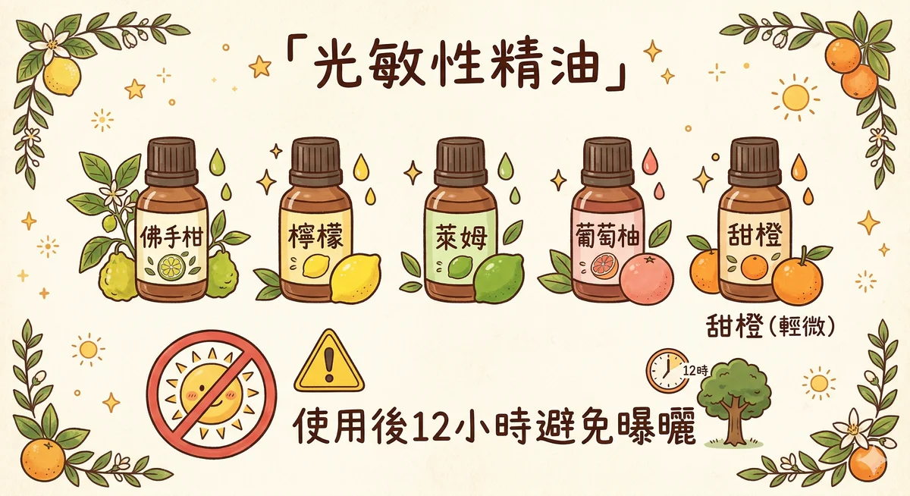

不是教科書，是讓你真正記得住的芳療筆記

芳療不是這幾年才有的「文青保養」。人類用香氣植物的歷史，比你手上那支手機的歷史長了大概六千年。
埃及人大約在西元前 4000 年就開始用芳香植物了。他們調製一種叫「Kyphi」的薰香配方，用在神殿祭祀裡，成分包含沒藥、杜松、肉桂等十幾種原料。對他們來說，香氣是跟神溝通的管道。
木乃伊製作也離不開芳香植物。雪松、沒藥、肉桂皮，這些東西的抗菌防腐力，讓三千年後的考古學家打開棺木時還能聞到殘留的香氣。想想看，你家冰箱的東西放一個月就變質了，人家用植物做的防腐放了三千年。
希波克拉底（Hippocrates），就是每個醫學生都要唸的「醫學之父」，他主張用芳香沐浴和按摩來維持健康。他留下一句很有名的話：「每天做一次芳香浴和按摩，就是通往健康的路。」
這位老先生有四百多種植物療法的紀錄，其中不少跟我們今天使用的精油植物重疊。
羅馬人把希臘的芳療知識繼承過來，然後用他們最擅長的方式發揚光大，蓋大浴場。公共浴場裡會加入各種香氛植物，泡完澡再做精油按摩。普林尼（Pliny）記錄了大量植物用途，蓋倫（Galen）則發展出冷霜配方，算是現代乳霜的老祖宗。
十世紀的波斯醫師阿維森納（Avicenna / Ibn Sina），改良了蒸餾設備，發明了冷凝法。在他之前，人類只能用浸泡、壓榨的方式取得植物精華；有了蒸餾技術，才能真正萃取出我們今天說的「精油」。他也寫了《醫學典範》，記錄了八百多種植物的藥用功效。
這是芳療史上最關鍵的技術突破。沒有蒸餾，就沒有精油產業。
十四世紀黑死病橫掃歐洲的時候，醫生戴著鳥嘴面具，嘴巴前面那個長長的「鳥嘴」裡面塞滿了丁香、肉桂、迷迭香等香料。當時的人相信瘴氣致病，認為強烈的香氣可以「擋住」疾病。
現在我們知道，那些香料確實有抗菌作用。雖然原理搞錯了，結論倒是歪打正著。
1928 年，這位法國化學家在實驗室裡被燒傷了手，情急之下把手伸進旁邊一桶薰衣草精油裡。結果傷口癒合得異常快，而且幾乎沒有留疤。他開始認真研究精油的藥理作用，並在 1937 年出版了《Aromatherapy》，「芳香療法」這個詞就是他創的。
對，整個產業的名字來自一次實驗室意外。
法國軍醫，二次大戰期間在戰場上用精油處理士兵的傷口感染。在抗生素還不普及的年代，他用茶樹、百里香、丁香等精油做消毒殺菌，成效顯著。他的著作《The Practice of Aromatherapy》（1964）把芳療從實驗室帶進了臨床應用的討論裡。
奧地利裔的法國生化學家，她的貢獻在於把精油跟按摩結合起來。她發展出「個人化處方」的概念，不是所有人都用一樣的油，而是根據每個人的體質、情緒、生活狀態來調配。這套思路深刻影響了英國的芳療教育體系，也是今天 NAHA 課程強調「個案評估」的源頭。
1910 年諾貝爾化學獎得主。他的研究對象就是精油裡的萜烯類化合物，確立了異戊二烯（Isoprene）是萜烯的基本結構單元。這讓精油化學從「民間經驗」變成了有科學骨架的學問。考試不一定會考他，但他是精油化學能被認真對待的原因。

市面上精油的價差可以到十倍以上。同樣寫著「薰衣草精油」，有的一瓶 NT$200，有的 NT$2,000。差在哪裡？不是瓶子比較漂亮，是裡面裝的東西根本不一樣。
這件事情要先講清楚：市面上沒有任何政府機構或國際組織認證所謂的「治療等級」（Therapeutic Grade）精油。那是某些品牌自己發明的行銷用語。NAHA 官方明確表示，他們不認可任何公司宣稱的「等級認證」。
如果有人跟你說「我們的精油是唯一通過某某認證的治療級精油」，你可以禮貌微笑，然後繼續貨比三家。
一瓶值得信任的精油，標籤上至少要有這些資訊：
柑橘類精油（檸檬、甜橙、佛手柑）通常是冷壓萃取的，把果皮壓一壓，油就流出來了，跟你擠橘子皮會噴汁是同一個道理。冷壓精油保留比較多原始成分，但保質期比較短。
大多數其他精油是蒸氣蒸餾的。把植物放進蒸餾器，用蒸氣把精油「帶」出來，經過冷凝再收集。溫度、時間、壓力都會影響品質。
精油的價格反映的是原料成本。一公斤玫瑰精油需要大約三到五噸的玫瑰花瓣，所以玫瑰精油貴是合理的。如果你看到跟薰衣草一樣價格的「玫瑰精油」，那裡面多半不是純玫瑰。
一個簡單的判斷：如果一家公司所有精油都賣同一個價格，不管是檸檬還是玫瑰還是乳香，那多半有問題。因為原料成本差異巨大，統一定價不合常理。

學精油不要死背。想像你要認識 20 個性格鮮明的人，每個人有自己的脾氣、擅長的事、跟不合的人。記住每支油的「個性」，考試的時候自然知道答案。
| 主要成分 | 沉香醇（Linalool）、乙酸沉香酯（Linalyl acetate） |
| 香氣 | 花香帶草本，溫柔但不甜膩 |
| 三大用途 | 舒緩緊張情緒、幫助入睡、皮膚修護（小面積燒燙傷） |
| 安全提醒 | 少數可以低濃度直接塗抹的精油之一，但仍建議稀釋使用 |
| 主要成分 | 萜品烯-4-醇（Terpinen-4-ol）、γ-萜品烯 |
| 香氣 | 清新、藥草感、微辛 |
| 三大用途 | 淨化空氣、皮膚清潔（痘痘肌）、足部護理 |
| 安全提醒 | 可低濃度點塗，但大面積使用務必稀釋；貓咪對茶樹非常敏感，家裡有貓要特別注意 |
| 主要成分 | 檸檬烯（Limonene） |
| 香氣 | 清新、明亮、酸甜 |
| 三大用途 | 提振精神、空氣清淨、居家清潔 |
| 安全提醒 | 光敏性。塗抹後 12 小時內不要曬太陽，否則皮膚會曬傷或出現色素沉澱 |
| 主要成分 | 檸檬烯（Limonene）佔 90% 以上 |
| 香氣 | 甜美、溫暖、令人放鬆 |
| 三大用途 | 舒緩焦慮情緒、幫助消化（按摩腹部）、兒童友善用油 |
| 安全提醒 | 甜橙的光敏性相對低，但冷壓柑橘類仍建議注意日曬 |
| 主要成分 | 薄荷醇（Menthol）、薄荷酮（Menthone） |
| 香氣 | 涼、衝、清醒 |
| 三大用途 | 提神醒腦、舒緩頭部不適（太陽穴塗抹）、消化不適 |
| 安全提醒 | 不可用於 6 歲以下兒童（薄荷醇可能引起呼吸問題）；孕婦避免大量使用；不要塗在臉部靠近眼鼻處 |
| 主要成分 | 1,8-桉油醇（1,8-Cineole / Eucalyptol） |
| 香氣 | 穿透力強的清涼感，像走進一座雨後的森林 |
| 三大用途 | 呼吸順暢（蒸氣吸入）、肌肉舒緩、空間殺菌 |
| 安全提醒 | 不適合 10 歲以下兒童（E. globulus 品種）；兒童可改用 E. radiata（澳洲尤加利）較溫和 |
| 主要成分 | 異丁基當歸酸酯等酯類 |
| 香氣 | 甜甜的蘋果味，溫和親切 |
| 三大用途 | 安撫情緒（特別適合兒童和嬰幼兒）、肌膚舒敏、幫助睡眠 |
| 安全提醒 | 非常溫和，是少數適合嬰幼兒的精油之一（低濃度 0.5% 以下）；菊科過敏者留意 |
| 主要成分 | 乙酸沉香酯（Linalyl acetate）、沉香醇（Linalool） |
| 香氣 | 草本帶甜味，有一種微醺的放鬆感 |
| 三大用途 | 女性生理期舒緩、緩解緊繃情緒、平衡油脂分泌 |
| 安全提醒 | 可能加強酒精效果（用完不建議馬上喝酒）；孕婦前三個月避用；不要跟鼠尾草（Sage）搞混 |
| 主要成分 | 香茅醇（Citronellol）、香葉醇（Geraniol） |
| 香氣 | 花香帶微甜，有人說像玫瑰的平價替代 |
| 三大用途 | 皮膚保養（各種膚質都適合）、情緒平衡、驅蚊 |
| 安全提醒 | 整體安全性高；敏感肌可先做貼膚測試 |
| 主要成分 | 香茅醇（Citronellol）、香葉醇（Geraniol）、玫瑰氧化物 |
| 香氣 | 深邃、飽滿的花香，聞過一次就忘不了 |
| 三大用途 | 抗老護膚（促進細胞再生）、深層情緒釋放、女性荷爾蒙調理 |
| 安全提醒 | 安全性非常高；唯一的「風險」是你的錢包，一公斤精油需要三到五噸花瓣 |
| 主要成分 | 1,8-桉油醇、樟腦（Camphor）、α-蒎烯 |
| 香氣 | 草本、清新、帶一點樟腦的溫熱 |
| 三大用途 | 增強專注力和記憶力、促進頭皮健康、肌肉舒緩 |
| 安全提醒 | 癲癇患者避用（樟腦成分有神經刺激性）；高血壓者慎用；孕婦避用 |
| 主要成分 | 沉香醇（Linalool）、大根老鸛草烯、乙酸苄酯 |
| 香氣 | 甜膩、濃郁、異國情調的花香 |
| 三大用途 | 降低焦慮（研究顯示可降血壓和心率）、催情、頭髮護理 |
| 安全提醒 | 用量要少，香氣太濃會頭暈或噁心；敏感肌可能刺激 |
| 主要成分 | α-蒎烯（α-Pinene）、檸檬烯（Limonene） |
| 香氣 | 溫暖、木質、帶樹脂的深沉感 |
| 三大用途 | 冥想靜心（加深呼吸）、抗老護膚、免疫支持 |
| 安全提醒 | 安全性非常高，是少數各年齡層都適合的精油 |
| 主要成分 | α-蒎烯、δ-3-蒈烯（δ-3-Carene） |
| 香氣 | 乾淨、清冽的木質調，像走進柏樹林 |
| 三大用途 | 循環系統支持（腿部按摩）、收斂毛孔、呼吸順暢 |
| 安全提醒 | 整體安全；避免與抗凝血藥物併用 |
| 主要成分 | 萜品烯-4-醇、γ-萜品烯 |
| 香氣 | 溫暖、草本、微甜，像一杯熱茶 |
| 三大用途 | 肌肉痠痛（泡澡或按摩）、幫助入睡、消化支持 |
| 安全提醒 | 可能降血壓，低血壓者慎用；孕婦避用 |
| 主要成分 | 肉桂醛（Cinnamaldehyde，樹皮）/ 丁香酚（Eugenol，葉片） |
| 香氣 | 辛辣、溫暖、甜香，冬天的味道 |
| 三大用途 | 暖身活血、空氣淨化、增進循環 |
| 安全提醒 | 皮膚刺激性非常高，必須低濃度（0.5% 以下）使用；孕婦和兒童避用；樹皮比葉片更刺激 |
| 主要成分 | β-雪松烯（Himachalene 類倍半萜烯） |
| 香氣 | 溫潤的木質調，像剛打開的原木衣櫃 |
| 三大用途 | 安定情緒、頭皮護理（控油去屑）、驅蟲 |
| 安全提醒 | 孕婦避用；整體安全性中等 |
| 主要成分 | 橙花醛（Neral）、香葉醛（Geranial）— 合稱檸檬醛（Citral） |
| 香氣 | 濃烈的檸檬草香，像泰式料理的底味 |
| 三大用途 | 驅蚊蟲、肌肉舒緩、空氣清新 |
| 安全提醒 | 皮膚刺激性較高（醛類），必須充分稀釋（1% 以下）；敏感肌和兒童慎用 |
| 主要成分 | 乙酸沉香酯（Linalyl acetate）、檸檬烯（Limonene）、呋喃香豆素 |
| 香氣 | 柑橘調但比檸檬多了花香層次，伯爵茶的香氣就是它 |
| 三大用途 | 抗焦慮和抑鬱情緒、皮膚護理、消化支持 |
| 安全提醒 | 光敏性最強的柑橘精油（呋喃香豆素）；塗抹後至少 12-18 小時避免日曬；可選購去呋喃香豆素版本（FCF） |
| 主要成分 | 薑烯（Zingiberene）、β-倍半水芹烯 |
| 香氣 | 辛辣、溫暖、帶一點甜，像薑茶的味道 |
| 三大用途 | 暖身促循環（冬天手腳冷）、緩解噁心（暈車暈船）、消化支持 |
| 安全提醒 | 可能造成皮膚刺激，稀釋使用；光敏性低但仍建議注意日曬 |
考試不是考你背多少，是考你聞到的時候能不能反應過來。這六組口訣幫你快速建立「家族記憶」，遇到題目先想它屬於哪一隊，答案就出來了。
口訣不用背得很精確。重要的是你聞到的時候能叫出名字，考試看到名字能想起氣味。多聞幾次，鼻子的記憶比腦袋可靠得多。

精油化學聽起來很嚇人，但其實核心概念不多。你只要記住一件事：所有精油的化學成分，都是從一個叫做「異戊二烯」（Isoprene，C5H8）的小積木堆出來的。
兩塊異戊二烯拼在一起（C10）= 單萜烯（Monoterpene），三塊拼在一起（C15）= 倍半萜烯（Sesquiterpene）。就像樂高積木，小塊拼成中塊，中塊拼成大塊。
單萜烯：分子小、揮發快、味道清新。很多柑橘類精油的主要成分就是單萜烯（像檸檬烯）。但也因為分子小，不穩定，容易氧化。所以柑橘精油開封後要盡快用完。
倍半萜烯：分子比較大、揮發慢、味道沉穩厚重。像雪松、薑裡面的主要成分。這些油通常是基調（Base Note），一滴可以留香很久。
萜烯骨架就像一個人的身體，而官能基就是穿在身上的衣服。同一個骨架掛上不同的官能基，性格完全不同。
掛了一個氫氧基。溫和、安全、抗菌力好。芳療界的好好先生。
代表：沉香醇（Linalool，薰衣草裡）、萜品烯-4-醇（Terpinen-4-ol，茶樹裡）
記法：「醇類最安全」— 凡是成分名稱結尾有「醇」的，通常溫和好用。
醇 + 酸結合的產物。氣味好聞、放鬆、抗痙攣。芳療界的安慰劑。
代表：乙酸沉香酯（Linalyl acetate，薰衣草和快樂鼠尾草裡的放鬆成分）
記法：名字裡有「酸」有「酯」的，聞起來通常很舒服，用起來很放鬆。
有檸檬香氣（柑橘醛類）或很甜的味道。抗發炎但皮膚刺激性強。
代表：檸檬醛（Citral，檸檬香茅裡）、香茅醛
記法：「醛類有味道，也有脾氣」— 好聞但刺激，一定要低濃度。
化痰、促進細胞再生，但高劑量有神經毒性。要小心的角色。
代表：薄荷酮（Menthone，薄荷裡）、樟腦（Camphor，迷迭香裡）、側柏酮（Thujone）
記法：「酮類是雙面人」— 用對了修復力強，用多了有神經毒性。癲癇和孕婦要避。
呼吸道的好朋友。祛痰、通鼻、殺菌。
代表：1,8-桉油醇（Eucalyptol，尤加利和迷迭香裡）
記法：「鼻子塞住就找氧化物」— 尤加利能通鼻就是因為它。
超強抗菌力，但也是皮膚刺激性最高的一群。需要非常低濃度使用。
代表：百里酚（Thymol，百里香裡）、丁香酚（Eugenol，丁香和肉桂葉裡）
記法：「酚類是精油界的漂白水」— 殺菌力很強，但碰到皮膚就痛。
抗痙攣、鎮痛。跟氧化物結構相似但作用不同。
代表：甲基醚蒔蘿醇（甜茴香裡）、反式茴香腦
記法：「醚類讓肌肉不再打結」— 痙攣和經痛的好幫手。
一個粗略但實用的排序，從最安全到最需要小心：
醇類 ≈ 酯類 > 單萜烯 > 氧化物 > 醚類 > 醛類 > 酮類 > 酚類
「醇酯安全，醛酮小心，酚類最兇。」記住這句就好。


精油不是魔法。它進入人體有兩條主要路徑，每一條都有科學可以解釋。
你的皮膚不是一塊塑膠膜，它是活的，有毛孔、有汗腺、有皮脂。精油的分子很小（通常低於 500 道爾頓），可以穿過皮膚的角質層，進入表皮、真皮，最終進入微血管循環。
加速吸收的因素：按摩（促進循環）、溫熱（毛孔擴張）、皮膚含水量高（洗澡後）。減緩吸收的因素：角質層厚（手掌腳底）、皮膚乾燥。這也是為什麼芳療按摩通常在沐浴後進行，而且要用基底油，基底油不只是稀釋，還幫助精油在皮膚上停留更久，增加吸收時間。
這條路徑更快，而且直接影響你的情緒。
你吸進精油的香氣分子 → 鼻腔頂端的嗅覺上皮細胞接收 → 嗅覺神經把訊號送進大腦 → 直接到達邊緣系統（Limbic System）。
邊緣系統是大腦裡管理情緒、記憶、本能反應的區域。它包含：
為什麼聞到某個味道會突然想起十年前的事？因為嗅覺是唯一不需要經過視丘（Thalamus，大腦的中繼站）就能直達邊緣系統的感官。視覺、聽覺、觸覺都要先過視丘「審核」，只有嗅覺是直達車。
| 系統 | 精油可以做什麼 | 代表精油 |
|---|---|---|
| 呼吸系統 | 暢通呼吸道、化痰 | 尤加利、薄荷、乳香 |
| 消化系統 | 緩解脹氣、促進蠕動 | 薄荷、薑、甜橙 |
| 循環系統 | 促進血液循環、減輕水腫 | 絲柏、迷迭香、薑 |
| 肌肉骨骼系統 | 舒緩肌肉痠痛 | 甜馬鬱蘭、迷迭香、薰衣草 |
| 神經系統 | 安撫或提振 | 薰衣草（安撫）、迷迭香（提振） |
| 免疫系統 | 增強防禦力 | 茶樹、乳香、檸檬 |
| 內分泌系統 | 荷爾蒙平衡支持 | 快樂鼠尾草、天竺葵、玫瑰 |
| 皮膚系統 | 修護、保濕、抗老 | 玫瑰、乳香、薰衣草 |

你有沒有過這種經驗：在某個地方聞到一種味道，突然之間整個人被拉回到十幾年前的某個場景，那個情緒、那個溫度、那個光線，全部回來了？
這不是你太感性。這是你大腦的標準配備。
上一個單元提過邊緣系統，這裡要更深入一點。
當你聞到薰衣草的時候，嗅覺神經把訊號直接送到杏仁核，它會在零點幾秒內判斷「這是安全的還是危險的」，然後觸發相應的身體反應。如果這個氣味跟你過去的安全記憶連結（比如媽媽衣服上的香味），你的身體會自動放鬆：心跳變慢、肌肉鬆弛、皮質醇降低。
反過來，如果某個氣味跟負面經驗連結，同一套系統會讓你瞬間緊繃。這整個過程不需要你「想」，它是自動發生的。
長期壓力會讓你的身體一直處於「戰或逃」模式，交感神經持續亢奮、皮質醇居高不下、免疫力下降、消化變差、睡眠品質低落。
精油能做的事情是：透過嗅覺路徑，直接跟負責「放鬆」的副交感神經對話。
不是精油「治好」了你的壓力，是它給了你的神經系統一個機會去切換模式。像是一直卡在高速公路上終於看到交流道，你可以選擇下去休息一下。
這是逸君老師在馥靈之鑰系統裡發展出來的核心概念。
想到薄荷，你嘴裡會不會有一絲涼意？想到酸梅，嘴巴是不是自動分泌唾液？這就是認知芳療的基礎。
嗅覺記憶一旦建立，你光是「想到」那個氣味，大腦就已經在啟動相應的神經迴路了。你不需要手邊真的有一瓶精油，只要你曾經聞過、記住了那個感覺，「想到」就能啟動一部分效果。
「鼻子在聞，但大腦在記憶。」
這也是為什麼馥靈之鑰的牌卡系統可以在線上運作，牌卡觸發氣味記憶或情緒連結，覺察就已經真實發生了。不需要精油，不需要特定空間。
這門學問研究的是心理狀態、神經系統和免疫系統之間的互相影響。簡單講就是：你的情緒真的會影響你的免疫力，不是「想太多」。
精油在這個迴路裡扮演的角色，不是直接「提升免疫力」，而是透過改善情緒和減少壓力反應，間接讓免疫系統有空間正常運作。
| 情緒狀態 | 推薦精油 | 作用方向 |
|---|---|---|
| 焦慮不安 | 薰衣草、佛手柑、乳香 | 安撫副交感神經 |
| 低落沮喪 | 甜橙、佛手柑、檸檬 | 提振、帶來溫暖感 |
| 憤怒煩躁 | 羅馬洋甘菊、依蘭依蘭 | 冷卻、放慢 |
| 精神渙散 | 迷迭香、薄荷、檸檬 | 聚焦、清醒 |
| 悲傷哀慟 | 玫瑰、乳香、雪松 | 支持、陪伴、安定 |
| 失眠緊繃 | 薰衣草、甜馬鬱蘭、快樂鼠尾草 | 放鬆、引導入睡 |


精油是高度濃縮的植物萃取物。一滴薰衣草精油大約需要 30 朵薰衣草花才能萃取出來。這個濃度意味著，使用不當可能造成皮膚灼傷、過敏反應，甚至影響神經系統。所以安全規矩不是教條，是真的有道理的。
| 對象 | 建議濃度 | 大約比例 |
|---|---|---|
| 成人身體按摩 | 2% | 每 10ml 基底油加 4 滴精油 |
| 成人臉部保養 | 1% | 每 10ml 基底油加 2 滴精油 |
| 兒童（6-12 歲） | 1% | 每 10ml 加 2 滴 |
| 兒童（2-6 歲） | 0.5% | 每 10ml 加 1 滴 |
| 嬰幼兒（3 個月-2 歲） | 0.25-0.5% | 10ml 加 0.5-1 滴（只限溫和精油） |
| 孕婦 | 0.5-1% | 10ml 加 1-2 滴（限安全精油） |
| 年長者 | 1% | 同臉部標準 |
| 急性處理（小範圍） | 3-5% | 短期使用，不超過兩週 |
快速換算法：1ml 精油大約 20 滴。2% 濃度 = 每 10ml 基底油中 4 滴精油。記住「10ml / 4滴 = 2%」這個基準，其他的按比例推。
以下精油塗抹皮膚後如果曬到紫外線，可能造成嚴重曬傷、色素沉澱甚至水泡：
小撇步：蒸餾版的柑橘精油通常沒有光敏性（因為造成光敏反應的呋喃香豆素在蒸餾過程中被去除了）。佛手柑有「FCF」版本（Furocoumarin-free），就是去掉了呋喃香豆素的版本，可以安心使用。
| 狀況 | 避用精油 | 原因 |
|---|---|---|
| 懷孕（尤其前三個月） | 快樂鼠尾草、迷迭香、肉桂、甜馬鬱蘭、雪松 | 可能刺激子宮收縮或影響荷爾蒙 |
| 癲癇 | 迷迭香、薄荷、尤加利（高樟腦/桉油醇） | 酮類和氧化物可能降低癲癇閾值 |
| 高血壓 | 迷迭香（大量使用時） | 可能升高血壓 |
| 低血壓 | 依蘭依蘭、甜馬鬱蘭 | 可能進一步降低血壓 |
| 兒童（6 歲以下） | 薄荷、尤加利 globulus | 薄荷醇 / 桉油醇可能引起呼吸痙攣 |
| 正在服用抗凝血藥 | 絲柏、肉桂 | 可能影響凝血功能 |
| 菊科過敏 | 羅馬洋甘菊、德國洋甘菊 | 交叉過敏反應 |
第一次用某支精油之前，做貼膚測試是基本功：
精油不能直接大面積塗在皮膚上，需要用基底油（Carrier Oil）稀釋。常用的：
調配複方精油的時候，要考慮香氣的層次：
經典配比建議：前調 30% + 中調 50% + 後調 20%。但這不是鐵律，你的鼻子說了算。
NAHA Level 1 考試每年都有一些「必考題」。以下 10 個知識點，考前一週每天看一遍，看到第三天你就記住了。不用硬背，理解了就忘不掉。
這 10 個知識點大概涵蓋了 Level 1 考試 30% 的題目。搞定這些，再去讀其他細節，心裡會踏實很多。